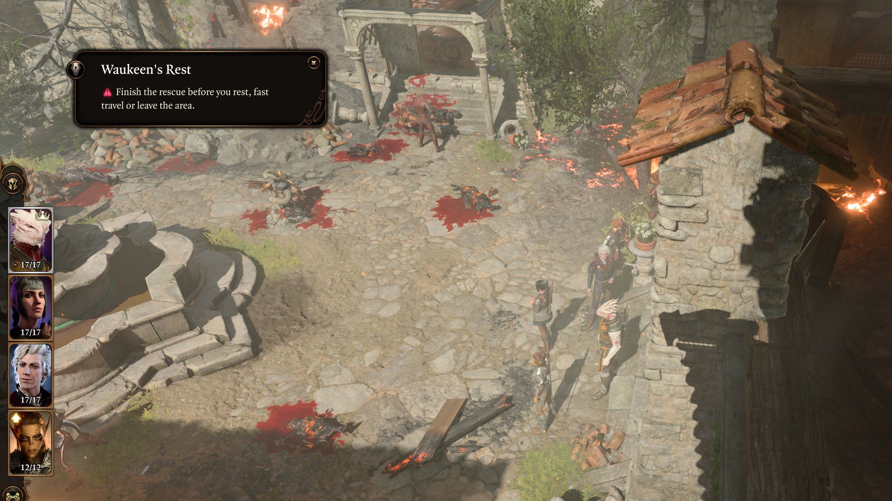
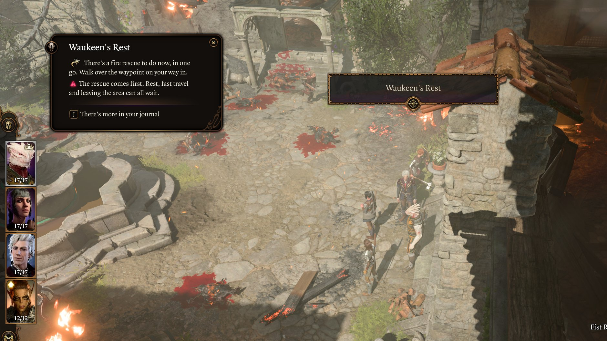
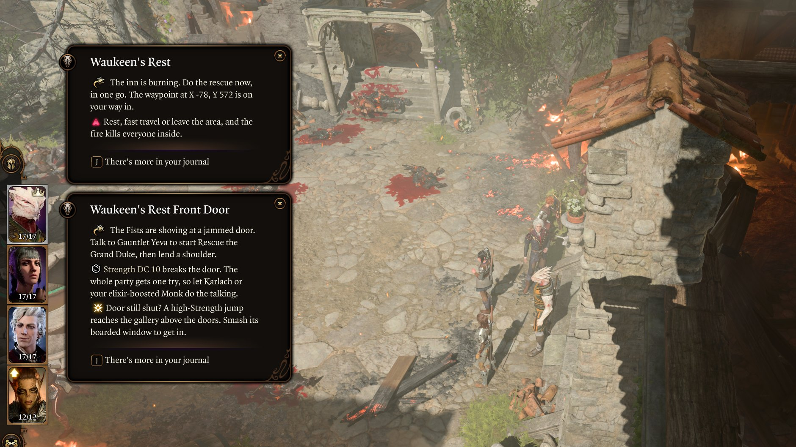

How much do you want to know?
Durge Guide is a mod for Baldur's Gate 3. A voice settles into the game's own screens, knowing what lies behind every door. It tells you only as much as you allow.



It stays silent until something could be lost for good. Even then, it won't say how.
It points the way and names what you could miss. What waits at the end of the road is your own affair.
It names the rolls, the loot and who will approve. The rest waits in your journal. Some things can't be unread.

It hides where you already look
There is no overlay and no new menu. Only the game's own screens, saying a little more than they did.
It has someone in mind
A first Dark Urge playthrough. An Open Hand Monk, travelling with Astarion, Karlach and Shadowheart, with a few item mods in the pack. It follows you through all three acts.
Bring other companions and the notes, pins and warnings still work. The party advice will simply name people who aren't there.
You can't have it yet
There is no public download. It runs on the native Linux build of the game, and has been tested on real saves in Acts 1 and 2. Act 3 has only been seen through a test jump.